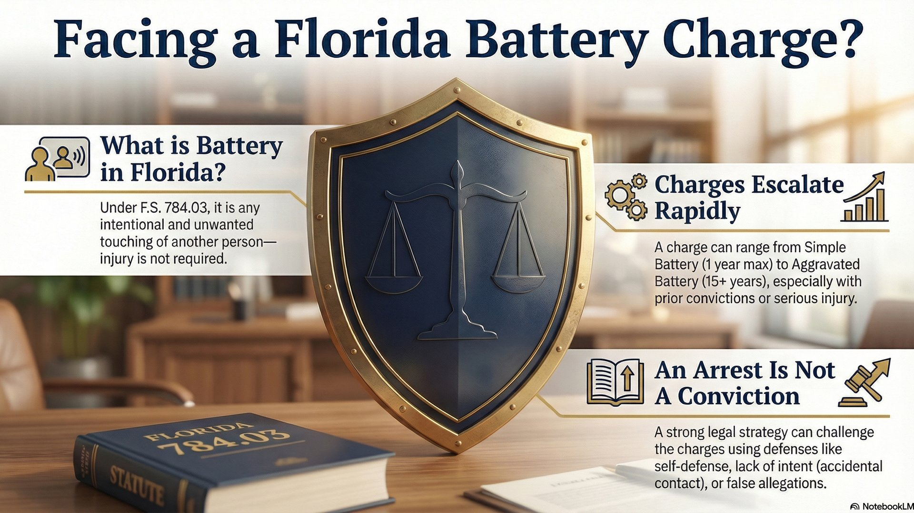
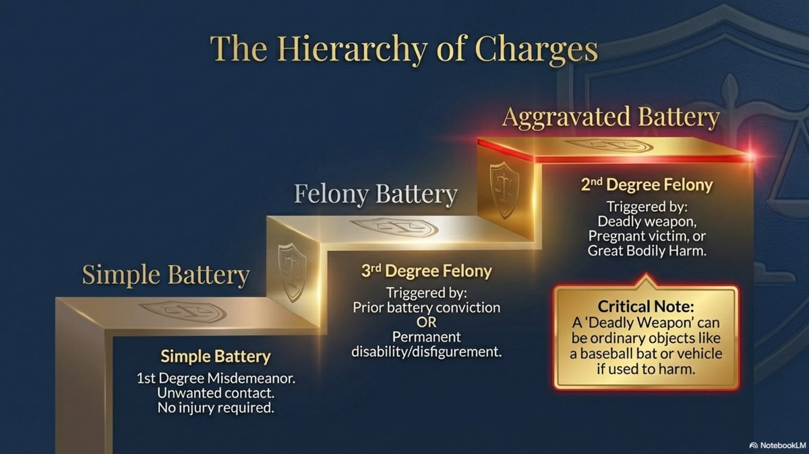
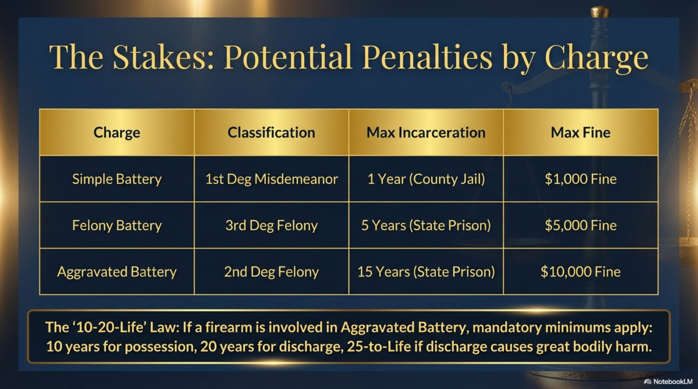
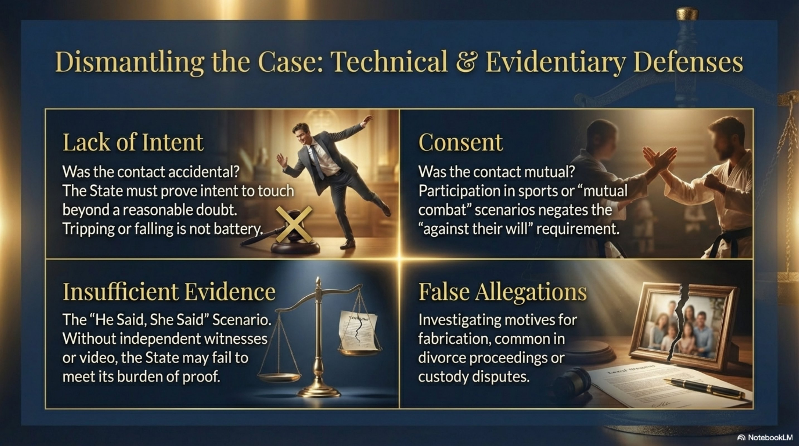
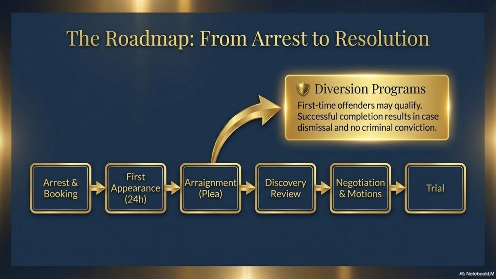

Battery Charges in Florida: Degrees, Defenses, and What to Expect

A heated argument turns physical. Someone pushes back during a confrontation. What starts as a minor altercation can quickly escalate into criminal charges—and the consequences depend entirely on which type of battery charge you're facing. In Florida, not all battery charges are the same, and understanding the difference between simple battery, felony battery, and aggravated battery can mean the difference between a misdemeanor and years in prison.
What Is Battery in Florida?
Under Florida Statute 784.03, battery occurs when a person:
- Actually and intentionally touches or strikes another person against their will, or
- Intentionally causes bodily harm to another person
The key element is unwanted contact. Florida law does not require visible injury—any intentional, non-consensual touching can constitute battery. A shove, a slap, even spitting on someone can all meet the legal definition of battery.
Important Distinction
The State does not need to prove that you intended to cause harm—only that you intended the contact itself. Accidental contact is not battery. But if you intentionally touched someone without their consent, that's enough for a charge—even if you didn't mean to hurt them.
The Different Degrees of Battery in Florida
Florida law recognizes several degrees of battery, each with different penalties based on the severity of the contact, the identity of the victim, and the defendant's criminal history.

1. Simple Battery (Misdemeanor)
Simple battery is a first-degree misdemeanor under F.S. 784.03. This is the most common battery charge and applies when there is unwanted contact without aggravating factors.
Simple Battery Penalties
- ✓ Up to 1 year in county jail
- ✓ Up to 12 months of probation
- ✓ Fines up to $1,000
- ✓ Possible anger management or batterer's intervention program
However, even a first-time simple battery conviction creates a permanent criminal record and can have lasting consequences for employment, professional licenses, and firearm rights.
2. Felony Battery (Third-Degree Felony)
Under F.S. 784.041, battery becomes a third-degree felony when:
- The defendant has a prior battery conviction (even if it was a misdemeanor), or
- The battery causes great bodily harm, permanent disability, or permanent disfigurement
Critical Point
If you were previously convicted of any battery—even a simple misdemeanor battery—a new battery charge automatically becomes a felony. This enhancement applies regardless of whether the new incident involved injury.
Felony Battery Penalties
- ✓ Up to 5 years in Florida State Prison
- ✓ Up to 5 years of probation
- ✓ Fines up to $5,000
- ✓ Permanent felony conviction on your record
3. Aggravated Battery (Second-Degree Felony)
Aggravated battery under F.S. 784.045 is a second-degree felony—one of the most serious violent crime charges in Florida. Aggravated battery occurs when a person commits battery and:
- Intentionally or knowingly causes great bodily harm, permanent disability, or permanent disfigurement, or
- Uses a deadly weapon during the battery, or
- The victim was pregnant at the time, and the defendant knew or should have known about the pregnancy
"Great bodily harm" means significant injury—more than minor bruising or soreness. Examples include broken bones, severe lacerations, internal injuries, or injuries requiring hospitalization.
A "deadly weapon" is any object that is likely to cause death or great bodily harm when used in its ordinary manner. This includes obvious weapons like guns and knives, but also objects like baseball bats, hammers, or even a vehicle if used as a weapon.
Aggravated Battery Penalties
- ✓ Up to 15 years in Florida State Prison
- ✓ Up to 15 years of probation
- ✓ Fines up to $10,000
- ✓ Mandatory minimum sentences under Florida's 10-20-Life law if a firearm was involved
Florida's 10-20-Life Law
If a firearm was involved in an aggravated battery, mandatory minimum sentences apply:
- 10 years if a firearm was possessed
- 20 years if a firearm was discharged
- 25 years to life if the discharge caused great bodily harm or death
Special Categories of Battery
Domestic Battery
When battery occurs between family or household members—spouses, ex-spouses, co-parents, people living together, or people related by blood or marriage—it is charged as domestic battery under F.S. 784.03.
Domestic battery carries the same penalties as simple battery (up to 1 year in jail), but comes with additional consequences:
- No bond until first appearance hearing (typically 24 hours)
- Mandatory no-contact order with the victim
- Completion of a 26-week Batterer's Intervention Program (BIP)
- Loss of firearm rights
- A second domestic battery conviction becomes a third-degree felony
Additionally, domestic battery by strangulation under F.S. 784.041 is automatically a third-degree felony, even on a first offense.
Battery on a Law Enforcement Officer
Under F.S. 784.07, battery on a law enforcement officer, firefighter, EMT, paramedic, or other specified persons is automatically a third-degree felony—even if the contact would otherwise be simple battery.
This means that even a minor shove or touch during an arrest can escalate from a misdemeanor to a felony charge carrying up to 5 years in prison.
The Stakes: Potential Penalties by Charge

Common Defenses to Battery Charges
Not every battery arrest leads to a conviction. Experienced criminal defense attorneys can challenge battery charges through several legal defenses:

1. Self-Defense or Defense of Others
Florida's self-defense laws allow you to use reasonable force to protect yourself or others from imminent harm. If you reasonably feared for your safety and had no safe way to retreat, you may have acted in lawful self-defense.
Evidence supporting self-defense includes:
- Witness statements about the alleged victim's aggressive behavior
- Prior threats or history of violence by the alleged victim
- Defensive injuries on your body
- Disparity in size or strength between you and the alleged victim
2. Lack of Intent
Battery requires intentional contact. If the touching was accidental—for example, you tripped and fell into someone—there is no battery. The State must prove beyond a reasonable doubt that you intended the contact.
3. Consent
If the alleged victim consented to the contact—such as during a sporting event or mutual combat—the touching was not "against their will" and therefore not battery.
4. Insufficient Evidence
In many battery cases, there are no independent witnesses and no video evidence. It becomes a "he said, she said" situation. If the State cannot prove beyond a reasonable doubt that you committed the battery, the charges should be dismissed or result in acquittal.
5. False Allegations
Unfortunately, false battery allegations occur—often in the context of divorce, custody disputes, or relationship breakups. Your attorney can investigate inconsistencies in the alleged victim's story, gather contradictory evidence, and expose motives for fabrication.
6. Constitutional Violations
If law enforcement violated your constitutional rights—such as an unlawful arrest, illegal search, or failure to read Miranda warnings before custodial interrogation—evidence obtained may be suppressed, weakening the State's case.
What to Expect If You're Charged with Battery
If you're arrested for battery in Florida, here's the roadmap from arrest to resolution:

At each stage of this process, strategic defense decisions can make the difference between conviction and case dismissal. Here's what happens at each step:
- Arrest and Booking: You'll be taken to jail, fingerprinted, and photographed.
- First Appearance: Within 24 hours, you'll appear before a judge who will set bond (if applicable) and inform you of the charges.
- Arraignment: You'll enter a plea (guilty, not guilty, or no contest). Most defendants plead not guilty at this stage.
- Discovery: Your attorney will receive evidence from the State, including police reports, witness statements, and any video or photos.
- Pre-Trial Motions: Your attorney may file motions to suppress evidence, dismiss charges, or exclude certain testimony.
- Plea Negotiations: Your attorney will negotiate with prosecutors for reduced charges, diversion programs, or case dismissal.
- Trial: If no plea agreement is reached, the case proceeds to trial where the State must prove guilt beyond a reasonable doubt.
Diversion Programs
In some cases—particularly first-time offenders—you may qualify for a pretrial diversion program. Successful completion results in the charges being dismissed, leaving you with no conviction on your record.
How a Criminal Defense Attorney Can Help
Battery charges—even misdemeanor charges—can have life-altering consequences. A conviction creates a permanent criminal record, affects employment and housing, and can result in jail time. If you're facing battery charges in Orlando or Central Florida, an experienced defense attorney can:
- Investigate the facts: Gather witness statements, video evidence, and medical records
- Challenge the State's case: File motions to suppress evidence or dismiss charges based on constitutional violations
- Negotiate with prosecutors: Seek reduced charges, diversion programs, or case dismissal
- Present defenses: Build a compelling case for self-defense, lack of intent, or false allegations
- Protect your record: Pursue options that avoid a permanent conviction
As a former Florida State Trooper and Deputy Sheriff, I understand how law enforcement builds battery cases—and how to challenge them. I know what prosecutors look for, what defenses work, and how to protect your rights at every stage of the process.
The Bottom Line
Battery charges in Florida range from misdemeanors to serious felonies carrying decades in prison. The consequences depend on the degree of force used, the victim's injuries, the defendant's criminal history, and the identity of the victim.
But a battery arrest is not the same as a conviction. With the right defense strategy, many battery cases can be reduced, dismissed, or won at trial. The key is acting quickly and hiring an attorney who understands both sides of the courtroom.
Related Articles
The "No Bond" Hold in Domestic Violence Cases
Why domestic battery arrests result in mandatory holds and your options for release.
Self-DefenseFlorida Stand Your Ground Law Explained
Understanding your right to self-defense and immunity hearings in assault cases.
Record ReliefClear Your Criminal Record in Florida
How to seal or expunge battery charges and move forward with a clean slate.
SentencingCriminal Punishment Scoresheet Explained
How Florida calculates your sentence and what it means for battery cases.
Facing Battery Charges in Orlando?
Don't face these charges alone. Whether you're charged with simple battery, felony battery, or aggravated battery, I'll review your case and explain your defense options. Call now for a confidential consultation.